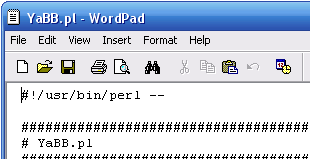

Step 1 - Editing the Path to Perl
Before you upload any files to your server, you first may need to make a few edits to 'AdminIndex.pl', 'Setup.pl' and 'YaBB.pl,' which are in the 'cgi-bin/yabb2' folder. Also 'SpellChecker.pl' in the 'cgi-bin/yabb2/Sources' folder of the package you downloaded. When you've found them, open each in a text editor such as UltraEdit or Notepad++. Make note of the very first line in each of these files, which is called a shebang or "path to Perl." Depending on your server, this line may need to be changed. This line must always start with #!.
Generally, the default is correct on most Linux/*nix systems ( On a Linux host, the path is usually #!/usr/bin/perl), but Perl can be installed in different locations. On a Windows host with Apache, your Perl path should probably be set to #!C:/Perl/Bin/Perl.exe. For Windows with IIS 6 or 7 and ActiveStates Perl, you will not usually need to edit the Shebang line, Perl usually works as PerlISAPI or as an Application Handler. IIS itself actually maps the .pm and .pl files to the Perl dlls or ISAPI module that has been installed. Check with your host or check your server for the proper path and change the file path accordingly in each of the files, noted above.